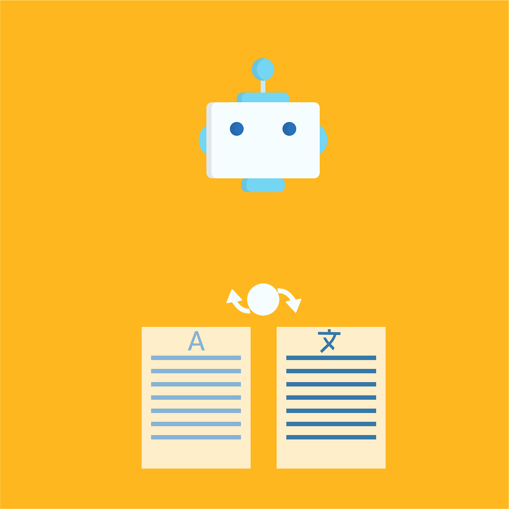

WORK SAMPLES

General Translations

Hi, I’m Fernando Boschiero, a freelancer since 2019. My recent work
has focused on Portuguese-BR ↔ English-US
translation, subtitling, audiovisual localization, and minor video
editing
— helping clients communicate clearly across languages. I’m now
looking to slowly shift into
Frontend Development (this Portfolio is my
2nd real-world project).
Before freelancing, I spent over a decade at IBM in IT auditing,
compliance, and systems management — a career that took me to 24+
countries and gave me rich international and cross-cultural
experience. Later, as co-owner and Brewmaster of a craft beer pub, I
honed creativity, discipline, and leadership.
Outside of work,
I’m supported by a wonderful wife and our baby daughter. I also enjoy
music (I once played in a band), cooking, reading, playing tennis, and
exploring good food.
Bringing together a
bilingual upbringing (I spent a good part of my childhood in the
U.S.)
with experience in IT, entrepreneurship, and translation, I offer
clients not just linguistic precision but also cultural fluency and
professionalism. As I grow into frontend development, I aim to deliver
the same dedication in building seamless, user-friendly digital
experiences.
Bachelor’s Degree in Psychology
PUCCAMP (December 2006)
FREELANCE pt-BR/en-US TRANSLATOR ASPIRING FRONTEND DEVELOPER
July 2019 — Present
November 2016 — July 2019
February 2016 — November 2016
November 2012 — February 2016
April 2011 — November 2012
February 2009 — April 2011
November 2006 — July 2008
March 2006 — November 2006
June 2005 — November 2005
January 2003 — May 2004
